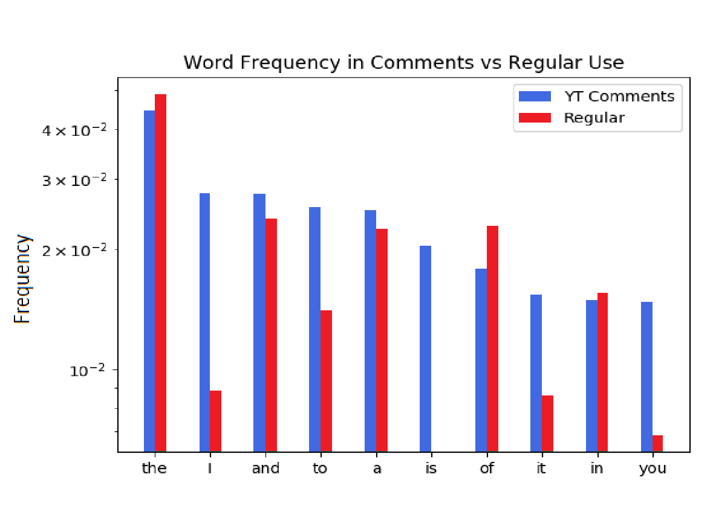

Home
Portfolio
About Me
This is my Portfolio!

Scratch World Cup Game
App Inventor Android Cooking Calculator
Link to Download:
This app works on Android, and allows you to enter
the amount, units, and ingredients in a recipe.
Then, you can half, double, or otherwise scale all ingredients
for a new recipe. The file can be imported to MIT's App Inventor 2.
Python Story: The Behavior Collector
Link to repl.it application itself:
MasterMind
Link to repl.it application itself:
Quarter 1 Review
Q: What was the most interesting project?
A: Definitely the flowchart project. It had a great creative element.
Q: What was the hardest to write.
A: I'd say the mastermind project had the most complex code.
It required a lot of "moving pieces" and variables to keep track of and incorporate.
Also, it was quite a challenge formatting everything so that numbers and rows of guesses
lined up evenly.
Q: What was the most creative?
A: The flowchart project spurred my creative juices most. With respect to the code,
we found creative ways of representing gamestates as a class, such that situations could
loop back on themselves. Writing the story, and creating the background story of our world
required a second dimension of creativity.
Photo Modification Project
Above and to the left is the original image, found in Venice Beach on Google Maps.
To the right is the final image, modified through a python script.
Link to repl.it application itself:
Running the above script as a .py file with the following original image should
produce the final image.
Link to Download Image:
Data Analysis
Question: how frequently are the most common words in YouTube comments used compared to their use in common speech?

The top 10 most used words in a random selection of 1000
YT comments chosen randomly from the top 5 trending YT video. Each word in each
selected comment was cross-referenced with a list of all English words. The
frequencies of use of the top 10 most used words were plotted in blue on a
logarithmic scale. In green, word frequency data from
here was used to plot
the common-use frequency of each word for comparison.
Answer: the most notable result was that words like "I" and "you" were used incredibly more often within YT
comments compared to common use. Our hypothesis explaining this phenomenon was that YT comments should tend to be
much more opinionated and personal statements of the commenter's opinion towards the video-maker.